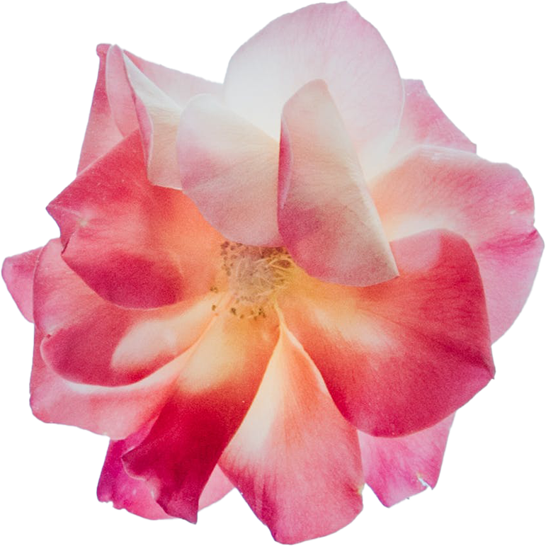
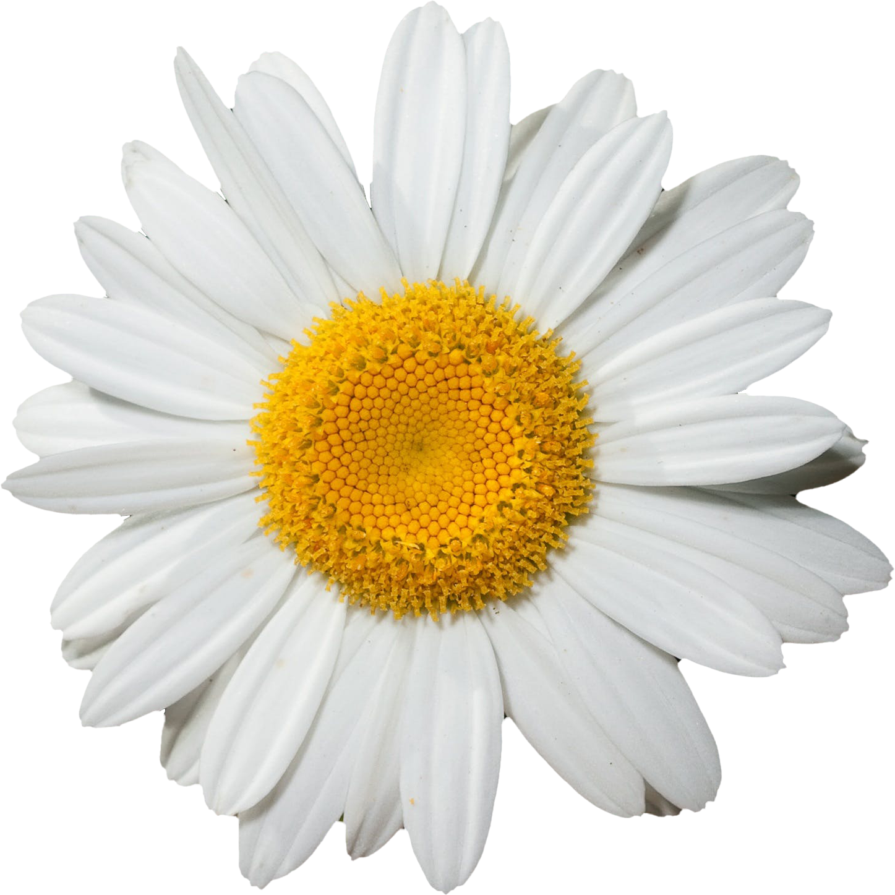

Click to see a rose!
A rose is either a woody perennial flowering plant of the genus Rosa, in the family Rosaceae, or the flower it bears. There are over three hundred species and tens of thousands of cultivars.
Click to see a daisy!
Daisies are a popular flower, often associated with innocence and purity, and come in various colors and sizes. They are known for their bright, cheerful blooms and are often used in gardens, bouquets, and even wedding decorations.
